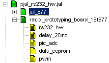
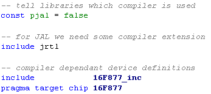
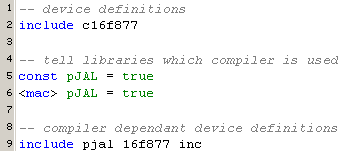
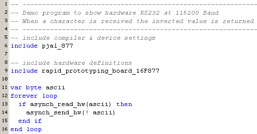
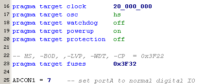

December 2005
pJAL Examples
Introduction
Here are a number of very simple examples, which were created to compare JAL and pJAL and to make and test if all my libraries are compatible with both compilers. With pJAL, it's possible that some libraries still can be optimized somewhat further, due to the extended possibilities of pJAL. It might be interesting to notice that in checking my library files, I found errors in almost every library.
First is shown, how in general the compiler dependancy is solved with just a small compiler dependant file.
Compiler Dependancy
Because of the compiler differences, the device specific files are "completly" different, and some of the library files are different. To switch easily between the different compilers, I've created the next solution, which seems to work quiet well.
|
 |
Here the general hierarchical structure of my programs is shown. The selected line in the tree is the compiler (and device) dependant include file. By changing this line to "pJAL_877" all the programs can be compiled with pJAL instead of JAL. |
The different compiler/device files are shown below:
|
JAL_877 |
pJAL_877 |
|
 |
 |
The JAL file "16F877_inc" is not the old auto-generated inc-file, but is extended with all the necessary bits in higher banks. In the PJAL_877 file there's an extra macro line, telling the macro generator in JALcc to generate code for pJAL instead of JAL. This is especially useful when string macros or other table generating macros are used. When JALcc is not used this macro has no effect.
A simple program, that can be compiled in both JAL and pJAL, just by changing 1 letter in line 6, looks like this

some of the device specific settings in Rapid_ProtoTyping_Board_16F877 are shown here:

Compatible Libraries
These Libraries are compatible with JAL and pJAL, unless otherwise specified.
Some of the libraries make use of the global constant "pJAL".
Libraries already checked / converted
Bit_Calcs, specific bit manipulation
DAC TLV5638 ,control of the DAC TLV5638 (2 channel 12 bits SPI-DAC)
DATA_EEPROM, supports 8 bits data-memory and 14-bits program-memory read/write
DELAY_20Mc, supports flexible delays at 20 MHz
HD44780, extended support of HD44780 LCD (including user characters / animations)
I2C_LIB_SM, supports I2C master behaviour
master_sync_ser_port, Control of the MSSP-SPI module
PIC_ADC, full support of PIC ADCs
PIC_general, General routines, valid for all PICs
PWM, support of both PWM outputs, choose between accurate frequency or high resolution mode
RS232_HW, supports both RS232 and SPI trough hardware MSSP-device
Libraries to be done
RS232_SW, supports software RS232 upto 230_400 Baud
Stepper
Stepper_RS232
US
IR
PS2
GP2D02
GP2D12
Byte3_Math
ADS1211
ADS1255
DAC1220
EEprom_tuning
Data_Booter
Dallas_1Wire
LM75
play_music
random
RCX
scan_matrix
Bit_Calcs (version 2.0)
Specific bit operations
-- procedure reverse_bits ( byte in out x ) is
DAC TLV5638 (version 2.0)
Library for the control of the DAC TLV5638 (2 channel 12 bits DAC), SPI control through both USART and MSSP are supported.
-- DAC_TLV5638_init set speed, power, Vref
-- DAC_TLV5638_set_AB set both DACs with new value
--
-- Data is transported through the variable
-- DAC_TLV5638_A_MSB, DAC_TLV5638_A_, DAC_TLV5638_B_MSB, DAC_TLV5638_B_LSB
Data_EEPROM (version 2.0)
Library that can write/read 8-bits data to/from data-eeprom and 14-bits data to/from program-eeprom
-- write/read 8 bits data DL, from data-eeprom location AL
-- - eeprom_put(AL,DL)
-- - eeprom_get(AL,DL)
-- write/read 14 bits data DH,DL, from program-eeprom location AH,AL
-- - program_eeprom_put(AH,AL,DH,DL)
-- - program_eeprom_get(AH,AL,DH,DL)
-- <Example data_eeprom
-- write/read 8 bits data DL
-- from data-eeprom location AL
eeprom_put(AL,DL)
eeprom_get(AL,DL)
-- write/read 14 bits data DH,DL
-- from program-eeprom location AH,AL
program_eeprom_put(AH,AL,DH,DL)
program_eeprom_get(AH,AL,DH,DL)
Delay_20Mc (version 2.0)
Library for delays at 20 MHz (target_clock is checked). For the smallest time (1 uS) a file to included is available (Delay_1uS_10MC.jal).
Fixed delays for the small times (without parameters)
-- delay_2uS, delay_3uS, delay_4uS, delay_5uS,
-- delay_6uS, delay_7uS, delay_8uS, delay_9uS
For the larger delays, routines with paramter N ( 1.. 255)
-- delay_10uS ( N )
-- delay_1mS ( N )
-- delay_100mS ( N )
HD44780 (version 2.0)
extended support of HD44780 LCD (including user characters / animations)
I2C_LIB_SM, (version 2.0)
I2C master procedures.
-- procedure I2C_byte_write
-- function I2C_byte_read
-- function I2C_byte_read_next
master_sync_ser_port, (version 2.0)
Control of the MSSP-SPI module
-- limitations:
-- - only master mode supported
-- - only SysClock /4 /16 /64 supported, otherwise error message
-- - Clock/Data timing always according Texas Instruments / Burr Brown SPI
-- procedure SPI_init_mssp
-- procedure SPI_enable_mssp
-- procedure SPI_disable_mssp
-- procedure SPI_init_mssp
-- procedure SPI_mssp_wait_until_ready
-- procedure SPI_send_mssp ( byte in x )
-- procedure SPI_read_mssp( byte out x )
PIC_ADC (version 3.0)
Library to use the PIC's AD converter.
-- procedure PIC_ADC_init
-- function PIC_ADC_low_res (chan)
-- procedure PIC_ADC_read_low_res (chan, sample)
-- procedure PIC_ADC_read (chan, highsample, lowsample)
-- Example
-- define the AD converter settings
const PIC_ADC_Nchan = 5 ;number of selected channels
const PIC_ADC_NVref = 0 ;number of external references
const PIC_ADC_Rsource = 20_000 ;maximum source resistance
;(max recommended = 10 kOhm)
const PIC_ADC_high_resolution = true ;true = high resolution = 10 bits
;false = low resolution = 8 bits
-- get the library, after defining the constants
include pic_adc
-- initialize the AD converter according to the above parameters
PIC_ADC_init
-- now take a sample
-- (choose the correct routine according to the selected resolution)
sample = PIC_ADC_low_res(chan)
PIC_general (version 2.0)
General routines, valid for all PICs
-- can insert breakpoints for use with JALss
<Example breakpoint
breakpoint = 5
... do other things
breakpoint = 6
PWM (version 2.0)
Library for using both PWM outputs. The main program should define frequency, duty-cycle.
There are 2 principal different ways to use the PWMs, either you choose to have a accurate frequency or you choose for a high resolution control.Let's look at the basic parameters
-- total period time = 4 * (pr2 + 1) * Tclock * Prescaler2
-- positive period time = duty * Tclock * Prescaler2
Now from these figures you can see that the positive period (which determines the dutycycle) can only vary from 0 to (4*(pr2 + 1)). As PR2 is just 8 bits, 4*PR2 has a maximum of 10 bits. So the only way to achieve a 10-bit dutycyle range is to set PR2 = 0xFF !!! In that case there are only 3 fixed frequencies available, determined by the PreScaler2, of 1kHz, 5kHz and 20kHz (to be exact 1.22, 4.88, 19.5 kHz). This choice yields for both pwms. This library supports both settings.
-- - PWM_Init_Resolution (Freq,enable1,enable2)
-- - PWM_Init_Frequency (enable1,enable2)
-- - PWM_Init_MinMax (Min1,Max1,Min2,Max2)
--
-- - PWM_Set_DutyCycle (duty1,duty2)
-- - PWM_Set_DutyCycle_Limited (duty1,duty2)
-- - PWM_Set_DutyCycle_HighRes (duty1H,duty1L, duty2H,duty2L)
--
-- - PWM1_start
-- - PWM1_stop
-- - PWM2_start
-- - PWM2_stop
-- - PWM12_start
-- - PWM12_stop
-- - PWM_start_stop (startstop1,startstop2)
-- --------------------------------------------------------------------
-- <Example
-- --------------------------------------------------------------------
-- PWM for 38 kHz IR modulation
-- define all the parameters and include the library
const pwm_frequency = 38_000 -- pwm frequency in Hz
const pwm1_dutycycle = 50 -- dutycycle in percent
const pwm1_dutycycle = 50 -- dutycycle in percent
-- init and start only PWM1
PWM_init_resolution (true,false)
-- stop the PWM
PWM1_stop
-- --------------------------------------------------------------------
-- PWM for control of 2 motors by a joystick
-- define all the parameters and include the library
-- even we don't use these values, the constants must be definied
const pwm_frequency = 38_000 -- pwm frequency in Hz
const pwm1_dutycycle = 50 -- dutycycle in percent
const pwm1_dutycycle = 50 -- dutycycle in percent
-- init and start both PWMs at a rate of 1 kHz
PWM_init_frequency (1,true,true)
-- adapt the dutycycle
PWM_Set_DutyCycle (joystick1,joystick2)
-- OR, if the joysticks doesn't reach 0 and 0xFF
-- we set the minimum and maximum values first
PWM_Init_MinMax (Min_JoyStick1, Max_JoyStick1,
Min_JoyStick2, Max_JoyStick2)
-- and adapt the dutycycle, with regards to min/max
PWM_Set_DutyCycle_limited (joystick1,joystick2)
-- --------------------------------------------------------------------
RS232_HW (version 4.0)
USART hardware control.
Routines for sending and receiving through the PIC-usart, both RS232 and SPI are supported. Baudrate can simply be set through a human constant, because the baudrate depending registers are calculated by this unit. Baudrate is calculated, starting at the high baudrate flag, which will ensure the highest possible accuracy. SPI routines are setup for more SPI-devices, in which case CS should be controled outside this unit.Transmission parameters are 8 databits, 1 stopbit, no parity, no handshake.
-- procedure SPI_init is
-- procedure asynch_init_hw is
-- procedure asynch_disable_hw
-- procedure asynch_send_hw( byte in x ) is
-- function asynch_read_hw( byte out x ) return bit is
-- procedure SPI_send_hw( byte in x ) is
-- procedure SPI_read_hw( byte out x ) is
-- Example
-- define settings
const usart_asynch = true ;true = RS232, false = SPI
const baudrate = 115_200 ;Baudrate
var byte ascii
forever loop
-- if character received, echo inverted
if asynch_read_hw (ascii) then
asynch_send_hw ( ! ascii)
end if
... do other things here
end loop
Test Programs
pJAL_Delay
pJAL_ADC
pJAL_prog_data_mem